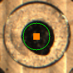
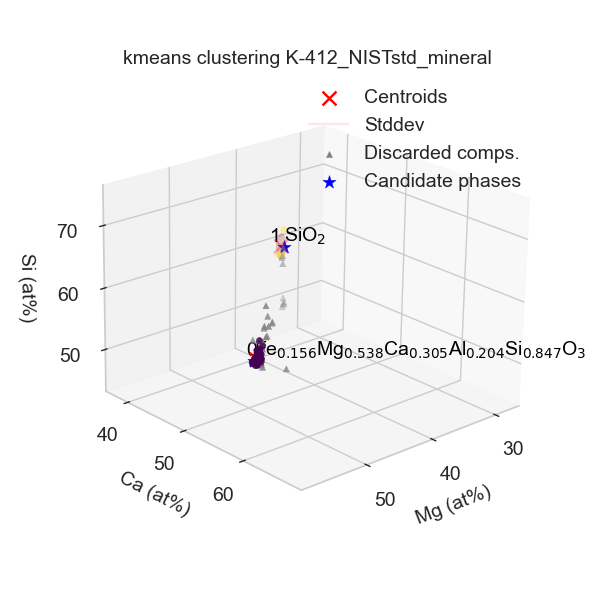
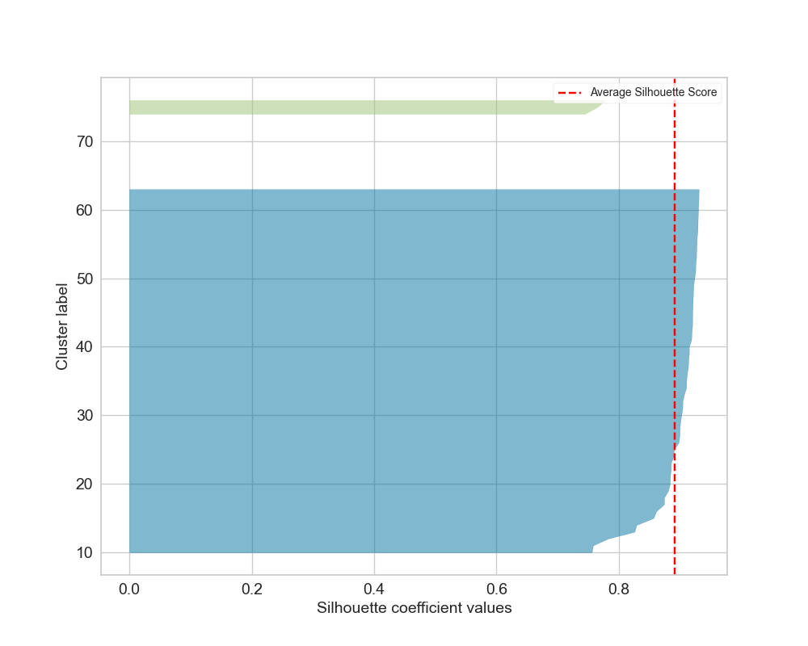

Tutorial: EDS compositional analysis for phase identification
This tutorial shows how to run the automated workflow for EDS compositional
analysis using the Run_Acquisition_Quant_Analysis.py script.
This script initiates the fully automated workflow described in Giunto et al. (https://www.researchsquare.com/article/rs-7837297/v1), which includes:
Acquisition of EDS spectra from powder or bulk samples
Fitting and quantification to extract compositions
Rule-based filtering of compositions
Clustering analysis to detect the number of phases and extract their compositions
The script allows multiple samples to be defined and run sequentially with a single click.
Key output includes:
SEM images of every analysed region
A
Data.csvfile containing the raw spectral data and quantified compositionsA
Clusters.csvfile containing the composition of each identified cluster, potential candidate phases, and their confidence scores
Step 1 – Open script to edit
Open autoemxsp/scripts/Run_Acquisition_Quant_Analysis.py.
In this tutorial, we’ll walk you through all the necessary parameters to configure
the measurement. For further details, see the API for the
batch_acquire_and_analyze function.
Step 2 – Define samples to analyse
Set the common parameters defining the physical sample characteristics:
sample_type: e.g.'powder'Supported types:powder,bulk,powder_continuous,bulk_roughsample_halfwidth: Half-width of the sample region to analyse (mm)sample_substrate_type: e.g.'Ctape'Supported types:Ctape,Nonesample_substrate_shape: e.g.'circle'Supported types:square,circlesample_substrate_width_mm: SEM stub diameter (mm)working_distance: Approximate working distance (mm). Autofocus is limited to 1 mm around this value to avoid large focusing errors.
Modify the samples list to define individual sample parameters. Each sample
is defined by a dictionary with the following keys:
ID: Sample identifier. All data are saved inresults_dirunder a folder named afterID.els: Elements quantified from the EDS spectra. Do not include elements present only in the substrate (e.g. C from carbon tape); these are defined separately viaels_substrate. Avoid light elements dominant in the substrate even if present in the sample (e.g. C from carbonates on carbon tape), as this may disrupt quantification and lead to large analytical errors. In general it would be best to avoid element overlap between substrate and sample.pos: Sample centre position in absolute microscope stage coordinates, typically obtained from Saved Positions at the microscope.cnd: List of candidate compositions that may be present. This can be modified later when re-running clustering analysis.
Additional keys may be defined in
autoemxsp.runners.batch_acquire_and_analyze to launch all together the
analysis of different types of samples, e.g. a powder’ and a `bulk.
See the Template: Customizing Parameters Per Sample section in the
batch_acquire_and_analyze script.
Step 3 – Define measurement configurations
Several parameters are microscope-specific and defined during the initial
AutoEMXSp setup.
Additional user-modifiable parameters include:
results_dir: Path to the project folder, where an individual folder per sample will be created. IfNone, defaults toautoemxsp/Results.beam_energy: Beam energy (keV). A standard reference file must exist for this voltage.is_manual_navigation: Whether to manually navigate to the region of interest. TypicallyFalse, unless you want to analyse a specific region of the sample.is_auto_substrate_detection: Enable automated substrate detection. Currently supported only forsample_substrate_type = 'Ctape'when the carbon tape appears dark on a brighter stub (e.g. Al). Allows to be tolerant to off-centered sticking of C tape.auto_adjust_brightness_contrast: Enable automatic brightness and contrast adjustment. TypicallyTrue. IfFalse, the following must be defined:contrastbrightness
min_n_spectra: Minimum number of spectra before convergence checking begins (only ifquantify_spectra = True).max_n_spectra: Target number of spectra ifquantify_spectra = False. Otherwise, the maximum number collected if convergence is not reached.target_Xsp_counts: Target number of counts per spectrum.max_XSp_acquisition_time: Maximum acquisition time per spectrum, after which the acquisition is interrupted, and the spectrum discarded.
Warning
max_XSp_acquisition_time should be defined as a function of the detector
counts/sec to ensure that the acquisition is interrupted only when wrong
regions are selected (e.g. carbon tape or a void in the sample instead of
a particle).
Spectra interrupted due to this parameter are flagged (quant_flag = 2)
and discarded. Ensure max_XSp_acquisition_time is set sufficiently high
for your EDS system.
Step 4 – Quantify spectra during acquisition
Set quantify_spectra = True or False.
When enabled, spectra are quantified during acquisition. Quantification is
parallelised but may be slow on less powerful microscope computers.
In this case, it is recommended to set quantify_spectra = False, and
follow step 8 after EDS acquisition.
When quantify_spectra = True, AutoEMXSp periodically checks for
convergence and may stop acquisition early.
Convergence criteria
If no candidate phases are assigned: all clusters must have RMS point-to-centroid distance < 2.5%.
If candidate phases are assigned: confidence score > 0.8 and RMS point-to-centroid distance < 3%.
Step 5 – Define other parameters
The following parameters do not affect acquisition and can be modified later, but require re-quantification:
interrupt_fits_bad_spectra: Interrupt quantification for spectra expected to lead to large errors. TypicallyTrueto speed up quantifications.min_bckgrnd_cnts: Minimum counts required under a reference peak for acceptance.Spectra failing this criterion are flagged (
quant_flag = 8).If
interrupt_fits_bad_spectra = False, they are quantified but filtered later.If too many spectra end up being flagged, consider decreasing
min_bckgrnd_cntsor increasingtarget_Xsp_countsin your following measurements.You can also change
min_bckgrnd_cntsand requantify the spectra (Step 8). In this case, to re-quantify efficiently after changingmin_bckgrnd_cnts, setquantify_only_unquantified_spectra = Truewhen running Step 8.
The following parameters require only re-analysis of compositions:
max_analytical_error_percent: Sets the maximum acceptable analytical error for filtering compositions during clustering. Compositions exceeding this threshold will be discarded.quant_flags_accepted: Specifies which quantification flags are considered valid during clustering. SeeQuantification Flag Descriptionsfor details on each flag.max_n_clusters: Defines the maximum number of clusters that can be identified in the sample. This value should be large enough to capture all relevant phases but not so large as to cause unnecessary computation. For material science samples, 6 is generally sufficientshow_unused_comps_clust: Controls whether discarded compositions (shown as black triangles) are displayed in the clustering plot. Even if discarded due to high analytical error, these compositions can provide visual hints about the phases present in the sample.
Step 6 – Sample-type-specific configurations
Depending on sample_type, define the following configurations:
powder_meas_cfg_kwargsforsample_type = 'powder'. Defines parameters to detect particles and select EDS acquisition spots.bulk_meas_cfg_kwargsforsample_type = 'powder_continuous','bulk', or'bulk_rough'. Set dimensions to define a grid of EDS acquisition spots.
See the Powder Measurement Configurations
for Bulk Measurement Configurations details.
Step 7 – Launch spectra acquisition
The script must be launched at the SEM.
Output
For each sample, AutoEMXSp creates a folder named after ID containing:
Comp_analysis_configs.jsonJSON file containing the full set ofAutoEMXSpconfigurations used during acquisition and analysis.EM_metadata.msaMetadata file generated by the microscope manufacturer.SEM images/Folder containing SEM images of every analysed region or particle, annotated with positions and ID of the acquired EDS spectra. If images are saved in.tiffformat, an additional annotation-free image is also included for post-processing.

Analysed_region.pngImage captured from the microscope navigation camera and annotated with the analysed region. This file is only present ifsample_type = 'powder'.
{kind=link}

Data.csvCSV file containing the raw spectral data together with acquisition metadata. The file includes the following columns:Spectrum IDInteger identifier reported in the annotated SEM images.Frame IDIdentifier of the SEM frame from which the spectrum was acquired.Particle #Particle identifier used to retrieve the corresponding particle image. Only present ifsample_type = 'powder'.(x, y)Position of the spectrum in the corresponding SEM image, expressed in relative coordinates as defined in the microscope driver located atautoemxsp/EM_driver/your_microscope_ID.Real_timeTotal acquisition time in seconds, measured from the beginning to the end of the acquisition.Live_timeEffective detector acquisition time in seconds, obtained by removing detector dead time fromReal_time.SpectrumRaw EDS spectral data.BackgroundBackground spectrum fitted by the microscope manufacturer. Only present ifautoemxsp.config.defaults.use_instrument_background = True.
Step 8 - Optional: (re)quantify spectra
This step allows you to quantify spectra after acquisition. It is performed automatically if
quantify_spectra = True was set during acquisition.
Alternatively, the acquired data folder can be copied to a more performant machine (for example,
with more CPU cores for faster parallel processing) and processed using autoemxsp/scripts/Run_Quantification_Analysis.py
Parameters
This script only requires a list of the samples to quantify samples_ID, and the project directory results_dir.
All other parameters are optional; many are in common with th acquisition
script, and have been previously decribed. Additional parameters are:
run_clustering_analysis: IfTrue, the clustering analysis will run automatically after quantification. Recommended:True.num_CPU_cores: Number of CPU cores used for parallel fitting and quantification. If set toNone, AutoEMXSp will automatically select half of the available cores.quantify_only_unquantified_spectra: IfTrue, quantifies only the previously unquantified spectra, for example after modifyingmin_bckgrnd_cnts. IfFalse, all spectra are quantified regardless.interrupt_fits_bad_spectra: IfTrue, saves time by interrupting the quantification of spectra likely leading to large quantification errors, including:
Spectra that cannot be properly fitted, usually occurring due to missing elements and unassigned peaks
Excessive absorption detected in the low-energy portion of the spectrum
Excessive analytical error > 50w%, usually occurring due to missing elements and unassigned peaks
Output
The quantification step updates the Data.csv file with the following columns:
El_at%: Atomic fraction for each element in the sample (defined inels).El_w%: Mass fraction for each element in the sample (defined inels).An er w%: Analytical total error (mass fraction). See the paper for details.r_squared: R² metric indicating the goodness of fit.redchi_sq: Reduced chi-squared value used to assess fit quality.Quant_flag: Flags indicating whether the quantification is reliable and, if not, the reason. SeeQuantification Flag Descriptions.Comments: For reliable spectra, reports the lowest counts fitted below a reference peak. For unreliable spectra, typically explains the reason for unreliability.
Step 9 - Optional: (re)analyse spectra
This step is performed automatically if:
quantify_spectra = Truewas set during acquisition.run_clustering_analysis = Truewas set during quantification.
To run or re-run the clustering analysis of the extracted compositional data,
execute autoemxsp/scripts/Run_Analysis.py
This step is not computationally intensive compared to quantification and can be run on the same machine or on a separate workstation.
Note: This script processes only one sample at a time, specified via
sample_ID.
Parameters
The script accepts some of the same parameters described previously for acquisition and quantification scripts. In addition, the following clustering-specific options are available:
clustering_features: Choose whether to use atomic fractions ('at_fr') or mass fractions ('w_fr') as features for clustering. Default is used if set toNone.k_forced: Force the number of clusters to a specific integer. If set toNone, the number of clusters is loaded fromComp_analysis_configs.json:If
kwas forced during acquisition, this value is used unlessk_finding_methodis notNone.If
kwas determined automatically during acquisition (k = None), it will be re-evaluated automatically.
k_finding_method: Method used to determine the number of clusters. See the available methods atClustering Config. Only applied ifk_forcedisNone. Note that ifkwas forced during acquisition, settingk_finding_methodto anything other thanNonewill forcekto be re-evaluated.do_matrix_decomposition: Determines whether matrix decomposition (NNLS, NMF) is computed for each cluster. Default isTrue. If many candidate phases are provided, these computations may take a long time and it may be desirable to set it toFalse.
Plotting options
ref_formulae: List of candidate compositions. IfNone, the list is loaded fromComp_analysis_configs.json.Warning: Providing a list will replace the loaded list unless the first entry is
""orNone(e.g.,ref_formulae = [,"Mn2O3"]), in which case the provided list will be appended.els_excluded_clust_plot: List of elements to exclude from the 3D clustering plot. By default, elements are used in the order defined inels.plot_custom_plots: IfTrue, use the custom plot function defined inautoemxsp/_custom_plotting.py. Useful for customize plots for publication.show_unused_compositions_cluster_plot: IfTrue, display discarded compositions as black triangles in the clustering plot. Consider that compositions discarded due to their analytical error may still be very close to the true composition and visually hint at the phases present in your sample. For this reason, it is preferrable to plot them unless the plot becomes too clogged.
Output
Running the script creates an Analysis folder with the following files:
Clustering_info.json: Contains the clustering and quantification configurations used.Clustering_plot.png: 3D clustering plot (also displayed interactively when the script runs).
{kind=link}

Silhouette_plot.png: Ifkwas not forced, shows silhouette scores for the determined number of clusters.
{kind=link}

Clusters.csv: One row per identified cluster, with the following columns:First column: identifies the Cluster ID.
n-points: Number of points in the cluster.El_at%: Atomic fractions of cluster centroid (i.e, average composition of the compositions in the cluster).El_std_at%: Standard deviation of atomic fractions of the cluster compositions.El_w%: Mass fraction of cluster centroid.El_std_w%: Standard deviation of mass fractions.RMS_dist_at%: Root-mean-square distance of points from centroid in atomic fraction space.RMS_dist_w%: Root-mean-square distance in mass fraction space.wcss: Within-cluster sum of squares (in the feature space used).cnd: Identified candidate composition with raw confidence scoreCS_rawand overall confidence scoreCS_cnd(taking into account neighboring candidate phase compositions, which decrease the confidence).mix: Pair of compositions potentially intermixed, with:CS_mix: Confidence score of mixture.Mol_Ratio: Molar ratio (X1 / X2).X1_mean: Mean molar fraction of the first phase.X1_stdev: Standard deviation of the first phase molar fraction.
Compositions.csv: Similar toData.csvbut with an additionalCluster IDcolumn indicating the cluster assignment.